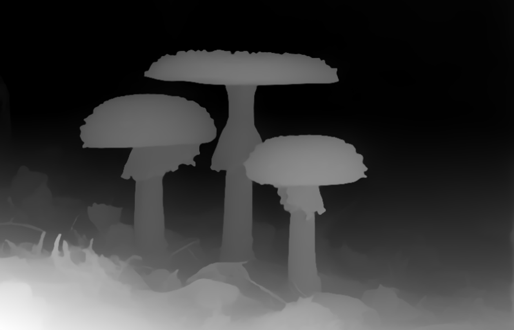
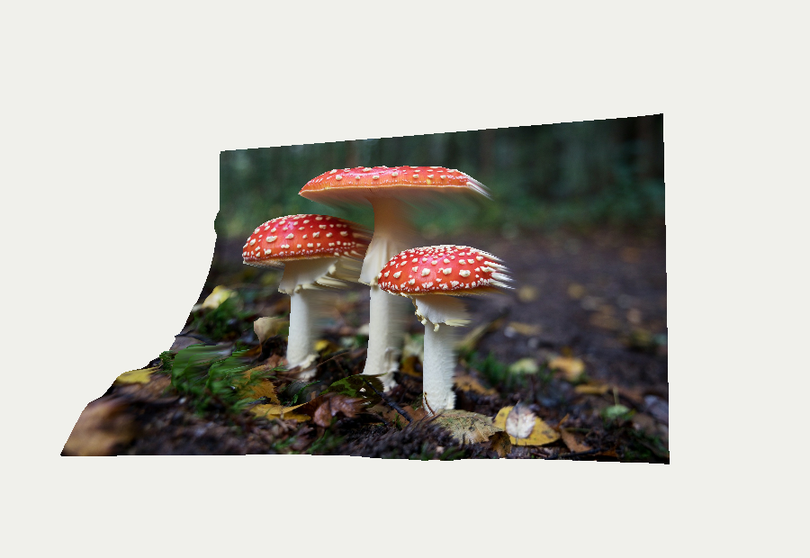

- Levoy and Hanrahan, Light Field Rendering, SIGGRAPH 1996.
- Gortler et al., The Lumigraph, SIGGRAPH 1996.
- Project-page framework adapted from the Academic Project Page Template.
Real-time image-based rendering from one RGB image and one depth image.
Hui Cui
First milestone video of the current progress
This project is an image-based rendering viewer for creating a simple 3D warping effect from a single RGB image and its corresponding depth image. Instead of modeling a scene from scratch, the viewer reuses image data and a proxy depth surface to synthesize nearby camera views.
The current system can load RGB/depth image pairs, display the warped result in real time, edit the depth map with a brush, adjust camera parameters, tune mesh resolution, remove triangles near depth discontinuities, and choose the background color for missing regions.
Input RGB image

Input depth map

Warped rendering result
The core idea is depth-image-based rendering. For every image sample, the RGB image provides color and the depth image provides a rough 3D position. A pixel coordinate \((u, v)\) is mapped to a point on a proxy surface:
\[ \mathbf{p}(u,v) = \begin{bmatrix} (u - 0.5)a \\ 0.5 - v \\ sD(u,v) + b \end{bmatrix}, \]
where \(a\) is the image aspect ratio, \(D(u,v) \in [0,1]\) is the depth value, \(s\) is the depth scale, and \(b\) is the depth bias. The color of this point is sampled directly from the original image:
\[ \mathbf{c}(u,v) = I(u,v). \]
The proxy mesh is then rendered from a virtual camera using a standard model-view-projection transform:
\[ \mathbf{x}_{clip} = PVM \begin{bmatrix} \mathbf{p}(u,v) \\ 1 \end{bmatrix}. \]
To reduce unnatural stretching, the mesh removes triangles whose depths differ too much. For a triangle with vertex depths \(d_1,d_2,d_3\), the triangle is kept only if
\[ \max(d_1,d_2,d_3) - \min(d_1,d_2,d_3) \le \tau, \]
where \(\tau\) is the depth tear threshold. This creates holes at strong depth discontinuities instead of stretching foreground texture into the background.
The program is written in C++ with OpenGL. The code is organized into separate modules for image loading, depth-map editing, mesh construction, and rendering. The main loop first checks whether the depth map or mesh needs to be updated, then renders the current RGB-D mesh to an offscreen framebuffer before copying the result to the main window.
The depth image is loaded as a normal image, but the viewer uses its luminance as the depth value. For each pixel, brighter values become larger normalized depth values in \([0,1]\). The optional invert setting flips this convention when a depth image uses the opposite meaning.
The Smooth current depth button applies a small local averaging filter to the current depth map. This is useful when the depth image has noisy pixels that would create jagged geometry. In simplified form, each updated depth value is computed from its neighborhood:
\[ D'(x,y) = \frac{\sum_{i=-1}^{1}\sum_{j=-1}^{1} w_{ij}D(x+i,y+j)} {\sum_{i=-1}^{1}\sum_{j=-1}^{1} w_{ij}}, \]
where the center pixel receives a larger weight than its neighbors. This makes the surface smoother, but it can also soften object boundaries, so it is best used lightly.
The proxy mesh usually has fewer vertices than the full image has pixels. For example, a \(160 \times 120\) mesh samples a much smaller grid than the original RGB/depth image. Because of this, the mesh does not simply choose the nearest depth pixel. Instead, it uses bilinear interpolation from the four closest depth samples:
\[ D(u,v) = (1-t_x)(1-t_y)D_{00} + t_x(1-t_y)D_{10} + (1-t_x)t_yD_{01} + t_xt_yD_{11}. \]
This interpolation avoids blocky depth changes when the mesh resolution is lower than the depth image. The RGB texture is also sampled smoothly by OpenGL during rendering, so the displayed result remains continuous even though the geometry is a finite triangle mesh.
After sampling the interpolated depth, each grid vertex is displaced along the \(z\)-axis using depth scale and depth bias. The mesh stores both a 3D position and a UV coordinate, so the original RGB image can be drawn directly onto the displaced surface. When sliders or brush edits change the depth values, the mesh is rebuilt and uploaded to OpenGL again.
To reduce stretching artifacts, each grid cell is split into two triangles only when its vertex depths are sufficiently similar. If a triangle crosses a strong depth jump, it is skipped. This creates cleaner missing regions instead of long stretched texture streaks. Finally, the renderer draws the textured mesh from the virtual camera controlled by yaw, pitch, zoom, pan, and field of view.
Since this method starts from a single RGB-D view, it cannot recover surfaces that were hidden in the original image. When the camera moves, newly visible regions appear as holes or stretched texture. Triangle tearing makes these missing regions cleaner, but it does not fill them.
cmake --build build --config release
.\build\Release\IBR_Viewer.exe